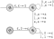
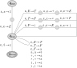

Reminder about browser check – you should see “OK” in script here: \({\mathcal O}{\mathcal K}\)
(Textbook, Exercise 2.5) [How to “grade” your work (10 points): 1 point for each of the normal beginning and ending transitions and labels (pushing the \(\texttt{\$}\) and popping the \(\texttt{\$}\) at the end). One point for the last state being an accepting state. You need a part of this that pushes symbols from the input onto the stack (that’s the self loop on \(q_1\) below), and a part that pops symbols (the self loop on \(q_2\)) making sure the popped symbols match input symbols – 2 points for each of those. Finally, the “tricky” part is the non-deterministic transition from \(q_1\) to \(q_2\) – you must have all three transitions here, on three possible input conditions (\(\texttt{0}\), \(\texttt{1}\), and \(\varepsilon\)), so 1 point for each of these. ]
The following PDA recognizes the set of binary strings that are palindromes. Note that it is very similar to the PDA for \(\{ww^{\mathcal R}\,|\,w\in\{0,1\}^*\}\) that we did in class, except it adds the ability to transition on a middle character from the pushing state (i.e., \(q_1\)) the the popping state (i.e., \(q_2\)). This is what enables the PDA to recognize odd-length palindromes.

(Textbook, Exercise 2.11) [How to “grade” your work (12 points): 1 points for each of the initial transitions (and make sure the second one pushes the start variable, which is \(E\) for this grammar). There are six rules in the grammar, so make sure each is in the diagram and the symbols are pushed in the correct order (right-to-left for each rule): 1 point for each rule being in the PDA (6 total). Then have 3 points for all the self-loop transitions on terminal symbols (there are 5 of these, so it’s not one point each – give all 3 points if all 5 are there, 2 points if 1 or 2 were omitted, 1 point if 3 or 4 were omitted, 0 points if none were included). Finally 1 point for the final transition to an accept state. ]
The PDA below is a direct construction from the CFG:

(Textbook, Exercise 2.14) [How to “grade” your work (10 points): Each step below must be shown, including those that make multiple transformations of the grammar. You get one point for a clear presentation (clearly labeled steps, etc.). There are 6 grammars in the process, so each of the first five are worth 1 point each. “Step 4” actually introduces two new variables for two different reasons, so one point for each of those. The final 2 points are given if the final grammar is in CNF (even if a step was messed up so it’s not the correct final grammar, these 2 points are just for producing a grammar in CNF. ]
Here is the step-by-step conversion to Chomsky Normal Form (CNF).
Step 1 – Add a new start variable:
\[ \begin{array}{l} S_0 \rightarrow A\\ A \rightarrow BAB\ |\ B\ |\ \varepsilon\\ B \rightarrow \texttt{00}\ |\ \varepsilon\\ \end{array} \]
Step 2 – Remove \(\varepsilon\)-rules: W first remove \(\varepsilon\) from the \(B\) rules (leaving out the useless “\(A\rightarrow A\)” rule that would be generated.
\[ \begin{array}{l} S_0 \rightarrow A\\ A \rightarrow BAB\ |\ AB\ |\ BA\ |\ B\ |\ \varepsilon\\ B \rightarrow \texttt{00}\\ \end{array} \]
Now we remove the \(\varepsilon\) from the \(A\) rule: \[ \begin{array}{l} S_0 \rightarrow A\ |\ \varepsilon\\ A \rightarrow BAB\ |\ BB\ |\ AB\ |\ BA\ |\ B\\ B \rightarrow \texttt{00}\\ \end{array} \]
Step 3 – Remove unit rules: First we remove the “\(A\rightarrow B\)” rule. \[ \begin{array}{l} S_0 \rightarrow A\ |\ \varepsilon\\ A \rightarrow BAB\ |\ BB\ |\ AB\ |\ BA\ |\ \texttt{00}\\ B \rightarrow \texttt{00}\\ \end{array} \]
Next we remove the “\(S_0\rightarrow A\)” rule. \[ \begin{array}{l} S_0 \rightarrow BAB\ |\ BB\ |\ AB\ |\ BA\ |\ \texttt{00}\ |\ \varepsilon\\ A \rightarrow BAB\ |\ BB\ |\ AB\ |\ BA\ |\ \texttt{00}\\ B \rightarrow \texttt{00}\\ \end{array} \]
Step 4 – Convert remaining rules to the proper form: We introduce a new variable \(Z\) to produce terminal \(\texttt{0}\), and variable \(V\) to reduce the length of the rules producing \(BAB\).
\[ \begin{array}{l} S_0 \rightarrow BV\ |\ BB\ |\ AB\ |\ BA\ |\ ZZ\ |\ \varepsilon\\ A \rightarrow BV\ |\ BB\ |\ AB\ |\ BA\ |\ ZZ\\ B \rightarrow ZZ\\ Z \rightarrow \texttt{0}\\ V \rightarrow AB\\ \end{array} \]
The grammar is now in Chomsky Normal Form, so this is the final answer.
(Textbook, Exercise 2.30a) [How to “grade” your work: 14 points. Grading notes: Essential parts of this proof: Assume \(L\) is a CFL (1 point) for the sake of contradiction (1 point); invoke the pumping lemma and define \(p\) as the pumping length (1 point); pick a string from \(L\) that works (4 points); argue why pumping the string will always produce a string not in \(L\) – it must specifically use all 3 conditions from the pumping lemma (e.g., what are the relevant consequences of \(|vxy|\leq p\) for this string \(s\)?) – 1 point for the use of each of the minor conditions, and 4 points for the pumping condition and the reasoning of why the pumped string is not in \(L\); conclude that \(L\) is not a (1 point). There may be other strings that work in the proof, other than the \(s\) below, but this is such an obvious choice for \(s\) that I imagine all correct proofs will use exactly this \(s\). ]
Claim: \(L=\{\texttt{0}^n\texttt{1}^n\texttt{0}^n\texttt{1}^n \,|\, n\geq 0\}\) is not a context-free language.
Proof: Assume for the sake of contradiction that \(L\) is a CFL. Let \(p\) be the pumping length given by the pumping lemma, and let \(s\) be the string \(\texttt{0}^p\texttt{1}^p\texttt{0}^p\texttt{1}^p\). For ease of reference, let’s refer to four “parts” of \(s\) in the obvious way. In other words, we say that “part 1” of the string is the first substring of \(\texttt{0}\)’s, “part 2” is the first substring of \(\texttt{1}\)’s, and so on. Since \(s\in L\) and has length at least \(p\), the pumping lemma says that we can divide \(s\) up as \(s=uvxyz\), where \(|vxy|\leq p\), \(|vy|>0\), and \(v\) and \(y\) can be “pumped.” The first of those conditions, \(|vxy|\leq p\), means that \(vxy\) cannot include symbols from both part 1 and part 3, as there are \(p\) symbols separating those two parts. The latter condition, \(|vy|>0\) means that either \(v\) or \(y\) (or both) must contain at least one symbol from the input, so when we pump \(s\) to get \(uv^2xy^2z\) we must be increasing the number of symbols in at least one part of \(s\). However, since \(vxy\) must exclude either part 1 or part 3, the number of \(\texttt{0}\)’s in the excluded part does not increase. Since the number of symbols in at least one part of the string increases, and another part does not, after pumping the parts cannot all have the same size. Therefore \(uv^2xy^2z\not\in L\), which contradicts the pumping lemma. Therefore, \(L\) is not a \(\textsf{CFL}\). \(\Box\)